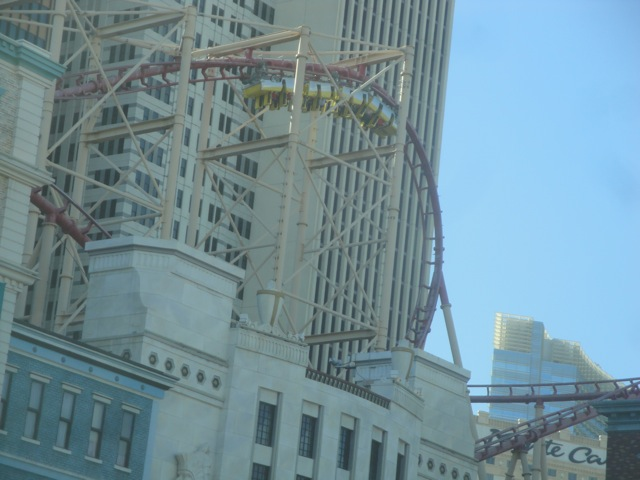
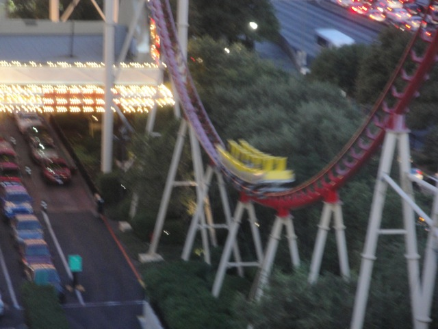
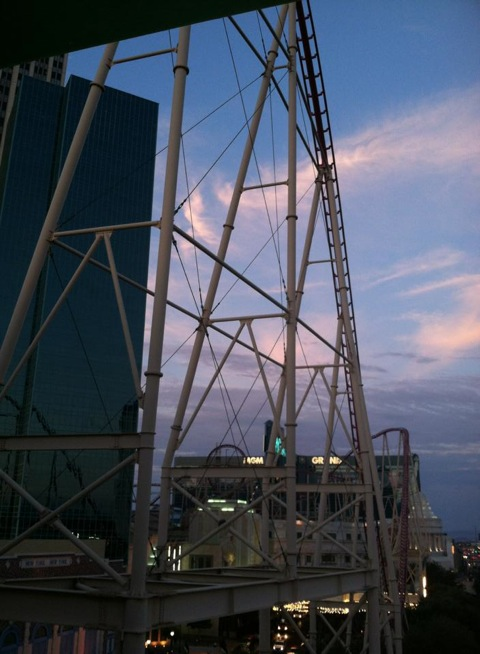

| |
Manhatten Express Review

We're here at the New York New York Hotel & Casino in Las Vegas where we're going to be riding their only roller coaster, Manhattan Express. Yes, I know that they technically re-named it the Roller Coaster, so I should be calling it Roller Coaster instead. But f*ck that!!! I'll call Manhattan Express "Roller Coaster" the same day I call the Sears Tower "The Willis Tower", Big Ben "The Elizabeth Tower", Burma "Myanmar", and Top Gun "Flight Deck". Anyways, we shell out $14 for a ride on Manhattan Express because you're a credit whore and/or an idiot. We pull down the lap bar and the shoulder restraints come down later. At first, it feels like nothing is there, but then once they're down, it feels awfully close to your neck. But hey. Its not like anythings gonna happen. You dispatch and are now off. You roll around a turn and climb up the lifthill. You get a lovely view of the parking structure and the backside of the New York New York Hotel & Casino. At the top, we at least are able to see the pretty lights of Las Vegas. We then head down the first drop (keep in mind I said first, not biggest). Its meh, but then as you rise up and get a few laterals, you quickly realize the downfall of this ride. The roughness. We rise up, turn, and head down into the biggest drop on the ride. The drop is fun, but the ride starts to shake at the bottom which is never a good sign. We rise up and then make a sharp turn. And you get a good JOLT. Now this is my main frustration witht the ride. The jolt wouldn't be too big of a deal on most coasters. It would suck, but it wouldn't cause too much pain. But because of the restraints on Manhattan Express, you're not getting headbanging on the side of your head where you have a skull to protect you, you're getting headbanging on your neck, an extremely sensitive part of your body, and this ride is just throwing karate chops at it. We then go through a vertical loop and there is still neckbanging throughout it, so you don't really get to enjoy this loop because yeah. Your neck. After that comes without a doubt, the best part of the ride. The Twist 'N' Dive. It flips you upsidedown, and there's a little bit of straight track, so you actually feel upsidedown and get a little hangtime before exiting out through a half loop. And there's no neckbanging here, so you're able to enjoy it. But don't worry. It gets a nice karate chop through an S Bend at the bottom before rising up into the mid course brakes. Ok, you turn, go down a small drop and up into an airtime hill. There's no airtime here at all, but a little more neck pain is here, so its not totally boring. You go through another turn and another slap to the neck is in order. A small drop is then had before we go up into another airtime hill. This one actually does have a pop of good airtime, so thats another postive quality of the ride. We rise up again, get another little pop, along with some more karate chopping as we turn and head into a helix. Its not very intersting, not that fun, and rattles your neck a little more. And yeah, a few more pops until you enter the brake run. Manhattan Express is not only a very bad ride, but its a very frustrating ride becauase this ride is just dripping with potential to be a very good ride. Its got nice speeds, a fun drop, that awesome twist and dive, and some airtime at the end. But unfortunetly, all this is overshadowed by the constant karate chopping it does to your neck. I know that they just got new trains recently and I am just baffled as to why the hell they didn't get new restraints that don't hurt your neck so much. This ride would be SO MUCH BETTER with just lap bars. Hell, even ordinary OTSRs would be an improvement because you'd at least be hitting your skull then and the banging itself isn't too bad, its just the fact that its your neck. I really hope that one day, Manhattan Express will get the Flight of Fear treatment and become awesome, but until then, I would not spend your money on this ride.
4/10
Location: New York New York Hotel & Casino
Opened: 1997
Built by: Togo
Last Ridden: July 12, 2013
Manhatten Express Photos




|